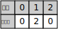

最小重量机器设计问题
Review: 看看是否可用分支限界法来解决此问题
问题
设某一机器由 m 个部件组成，每一种部件都可以从 n 个不同的供应商处购得。
设 weight[i][j] 是从供应商 j 处购得部件 i 的重量，cost[i][j] 是相应的价钱。
试设计一个算法，给出总价格不超过 c 的最小重量机器设计
要求计算出最小重量，和每个部件所对应的供应商
例如：
-
m = 3
n = 3
c = 4 -
重量
weight[i][j]
-
价格
cost[i][j]
求解得到：
-
最小重量 = 4
-
每个部件所对应的供应商如下图：

思路
求解满足约束（总价格不超过 c）的解，还很容易想到用回溯法来求解。 只是回溯法一般求解所有解，当然了既然能求解出所有解，计算出最优解也不是难事
将每次求得的解与上次求得的解做比较，看看哪个解的重量要小，然后舍去另一个解。 在每次测试某个节点是否满足的约束的时候，可加入限界函数， 如果这时的总重量已经大于上个解的总重量，那么即使满足约束也不必继续搜索
代码
以下代码并不是全部代码
#include <string.h>
struct data_machine {
int init_flag; /* 方便清理，标记初始化的时候是否用了 malloc 分配空间 */
int solution_flag; /* 标记是否有解 */
int part; /* 部件数目 */
int supplier; /* 供应商数目 */
int max_cost; /* 允许的最大费用 */
int min_weight; /* 已求得的最小重量和 */
int *path; /* 递归路径，可得到 min_weight 有哪些重量组成 */
int *min_path; /* 最小重量和的递归路径 */
int **weight; /* 部件/重量，矩阵 */
int **cost; /* 部件/价格，矩阵 */
};
/*
* 满足约束返回 TRUE, 否则返回 FALSE
*/
int constraint(struct data_machine *data, int cost)
{
if (cost > data->max_cost) {
return FALSE;
}
return TRUE;
}
/*
* 满足减枝条件返回 TRUE, 否则返回 FALSE
*/
int bound(struct data_machine *data, int weight)
{
if (data->solution_flag == TRUE) {
if (weight >= data->min_weight) {
return TRUE;
}
}
return FALSE;
}
/*
* 处理求得的解
*/
void result(struct data_machine *data, int weight)
{
if (data->solution_flag == FALSE) {
data->solution_flag = TRUE;
data->min_weight = weight;
memcpy(data->min_path, data->path, sizeof(int) * data->part);
} else {
if (data->min_weight > weight) {
data->min_weight = weight;
memcpy(data->min_path, data->path, sizeof(int) * data->part);
}
}
}
void minimum_weight_iter(struct data_machine *data,
int part, int weight, int cost)
{
if (part == data->part) {
result(data, weight);
return;
}
for (int i = 0; i < data->supplier; i++) {
data->path[part] = i;
if (constraint(data, cost + data->cost[part][i]) == TRUE
&& bound(data, weight + data->weight[part][i]) == FALSE) {
minimum_weight_iter(data, part + 1,
weight + data->weight[part][i], cost + data->cost[part][i]);
}
}
}
void minimum_weight(struct data_machine *data)
{
minimum_weight_iter(data, 0, 0, 0);
}